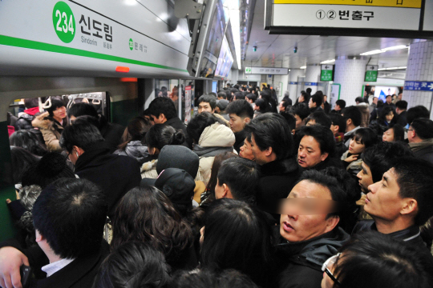

지하철 안 뿐만 아니라 플랫폼의 1-1 ~ 10-4 영역(1호선 기준) 별 사람들의 분포도를 알려주는 서비스
지하철 앱 또는 지하철 안과 플랫폼의 전광판에 사람들이 얼마나 많은지 나타냄
April 2019
분포도를 나타내는 법
사람들의 분포도를 1~5단계 정도로 나누어 나타낸다. 하지만 출근, 퇴근 시간대에는 어느 곳이든 사람들이 많으므로 절대적인 것 뿐만이 아닌 상대적으로도 나타낸다.
April 2019
만들고 싶은 이유
나의 경험

등교를 할 때면 학생들의 등교 시간과 직장인들의 출근시간이 겹쳐 지하철에 사람들이 아주 많다.
플랫폼에도 사람들이 많아 지하철에 타지 못해 지하철을 한 번씩은 항상 그냥 보내야하며 두 번째로 오는 지하철조차 겨우겨우 타는 것이 대부분이다.
이렇게 타지 못하고 지하철이 출발할 때 탈 수 있을만한 칸이 보이면 아쉬워하고는 한다.
하지만 한 사람보다라도 빨리 줄을 서야 할 시간에 1-1 ~ 10-4를 다 보고 줄을 설 수는 없다.
이럴 때마다 플랫폼 영역 별, 지하철 칸 별 사람들의 분포도를 볼 수 있으면 좋겠다고 생각하였다.
친구의 이야기
친구는 사람이 많이 있는 곳에 있으면 어지러워 한다. 그래서 지하처을 탈 때 사람들이 많으면 조금이라도 적은 칸까지 이동한다고 한다.
그래서 칸 별, 플랫폼 별 사람들이 얼마나 많은지 알면 좋겠다고 말하기도 하였다.